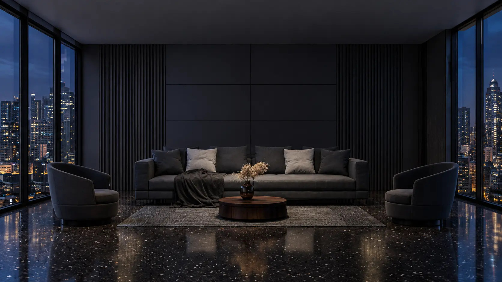
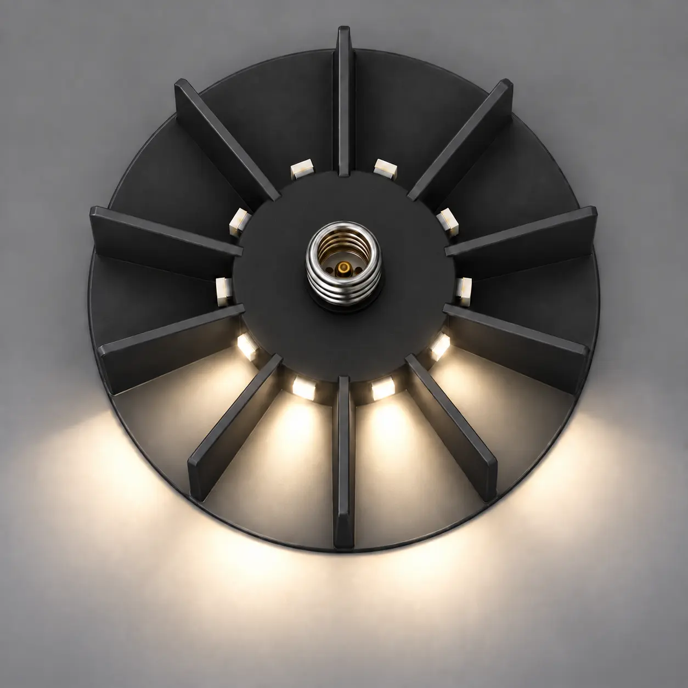
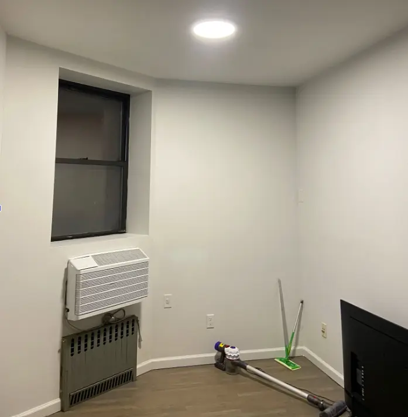

Redirect glare
Segmented fins direct light toward walls instead of your eyes, turning a direct overhead source into indirect light.


Researching light-sensitive spaces
LumaShift is an adjustable overhead-fixture retrofit being developed for people whose migraines or light sensitivity are aggravated by bright, fluorescent, or standard LED lighting—at home, work, school, and beyond. No rewiring or electrician.
Three mechanisms. One fixture.
Segmented fins direct light toward walls instead of your eyes, turning a direct overhead source into indirect light.
We are designing the retrofit around a better driver to reduce a common quality problem in standard LEDs.
A warmer color temperature is intended to reduce exposure to the cool, blue-heavy feel of many overhead LEDs.

Designed for the spaces you do not control
People with light sensitivity do not always get to choose the lighting at work, school, home, or in shared spaces. The usual workaround is glasses, lamps, closed blinds, or simply avoiding the area.
LumaShift installs onto an existing ceiling fixture and is being designed to take a common environmental trigger out of the places where you spend your day.
Why this does not exist yet
Segmented aimable finsRedirect light independently
Direct screw-in baseFits an existing Edison socket
Warmer, steadier lightAddresses more than one mechanism
Your experience matters
This is research, not a medical treatment. It takes about two minutes and helps us focus on the right problems.
Share your experience